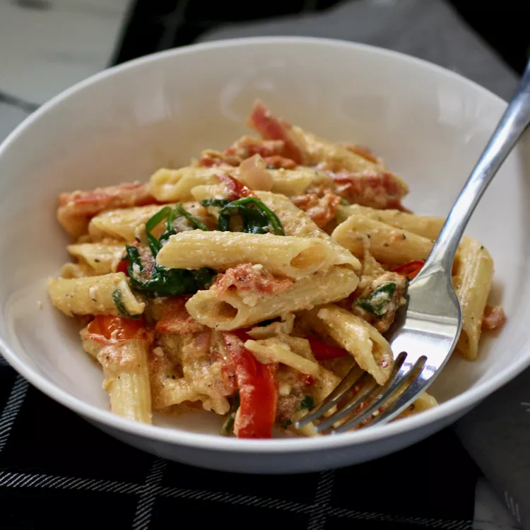

Baked Feta Pasta

Description
An easy to make pasta with baked feta inspired by current TikTok trends.
Ingredients
- 2 pints cherry tomatoes
- 1/2 cup olive oil
- 4 cloves peeled garlic
- 2 tbsp lemon juice
- 1 tbsp lemon zest
- 8 ounce feta cheese
- 12 ounce penne pasta
- 1 cup baby spinach
- 1/2 tsp dried basil
- salt & pepper to taste
- Meanwhile, bring a large pot of lightly salted water to a boil. Add penne and cook, stirring occasionally, until tender yet firm to the bite, about 11 minutes. Drain and reserve about 1 cup of the pasta water.
- Remove feta-tomato mixture from the oven. Mash garlic, tomatoes, onions, and peppers with a heavy spoon and mix with the feta cheese, creating a sauce. Stir in spinach and cooked pasta. The spinach will get cooked from the heat of the pasta sauce and pasta. Add pasta water, a little at a time if needed, to reach desired consistency. Mix well and serve.
Steps
- Preheat the oven to 400 degrees F (200 degrees C).
- Combine cherry tomatoes, olive oil, garlic, lemon juice, lemon zest, basil, salt and pepper in a 13x9-inch baking dish.
- Make room in the middle of the pan and add block of feta cheese. Flip in oil, making sure cheese remains intact and becomes well coated.
- Bake in the preheated oven until the cherry tomatoes begin to blister and split, 40 to 45 minutes.